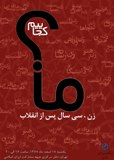

پذيرش > اخبار > برنامه های 8 مارس در تهران

 برنامه های 8 مارس در تهران برنامه های 8 مارس در تهران
18 اسفند 1387 - - نسخه قابل چاپ
کانون وکلا برگزار می کند: نشست "زنان اکنون" در روز جهانی زن
تغییر برای برابری: کانون وکلای دادگستری مرگز نشست "زنان اکنون" را به مناسبت روز جهانی زن برگزار می کند.
دکتر بهشید ارفع نیا، دکتر رزا قراچورلو، زهره ارزنی، نسرین ستوده، شادی صدر و شهیندخت مولاوردی از جمله سخنرانان این نشست هستند.پرسش و پاسخ پیرامون مسائل حقوقی زنان و نمایش فیلم مستند از دیگر برنامه های این نشست است.
این نشست در راستای طرح گروهی ارتقاء حقوق بشر و دسترسی بیشتر به عدالت از ساعت 14 تا 17 یکشنبه 18 اسفند در سالن آمفی تئاتر پارک ورشو واقع در خیابان کریم خان، خیابان استاد نجات الهی، نبش خیابان ورشو برپا می شود.
روز جهانی زن در موسسه رهیاب
تغییر برای برابری - یکشنبه 18 اسفند ماه از ساعت 16:15الی 18:30 برنامه ای به مناسبت روز جهانی زن در موسسه رهیاب برگزار می شود.
برنامه¬های روز جهانی در موسسه رهیاب :
. سخنرانی خانم دکتر شهلا اعزازی
. سخنرانی خانم نسترن موسوی
. شعرخوانی
. اجرای موسیقی زنده توسط خانم زرگریان
. سخنرانی محبوبه عباسقلی زاده
نشانی : تهران ، ابتدای کوی نصر (گیشا) ، پلاک 29 ، واحد 7
www.rahyabiran.org
همایش نیم روزۀ "زن، سی سال پس از انقلاب اسلامی"
روز جهاني زن مبارك
"ما کجاییم؟ زن، سی سال پس از انقلاب"

شاخۀ زنان جبهه مشارکت ایران اسلامی روز یکشنبه 18 اسفندماه سالجاری به مناسبت روز جهانی زن، همایش نیم روزۀ "زن، سی سال پس از انقلاب اسلامی" را برگزار می کند.
در این برنامه که با محورهای، زن در اندیشۀ امام، قرآن پژوهی، دفاع مقدس، حقوق، سیاست، امنیت، شوراها، دانش، رسانه، هنر، فعالیت های مدنی، کارآفرینی، ورزش و بهداشت برگزار می شود، خانم ها دکتر معصومه ابتکار، دکتر فاطمه راکعی، اعظم طالقانی و اشرف گرامی زادگان و آقای حجه الاسلام دکتر محمد مقدم سخنرانی خواهند کرد. همچنین از بزرگان و تأثیرگذاران در سرنوشت زن ایرانی طی این سه دهه از جمله خانم ها استاد منیره گرجی، مه لقا ملاح، دکتر الهه کولایی، فائزه هاشمی و شهلا شرکت تجلیل به عمل خواهد آمد.
ا
ین برنامه با اجرای موسیقی، پخش فیلم و نمایشگاه کتاب همراه خواهد بود.
از کلیۀ علاقه مندان برای شرکت در این برنامه دعوت بعمل می آید.
زمان: 18 اسفند 1387 از ساعت 15:30 الی 20
مکان: خیابان سمیه، بین سپهبد قرنی و استاد نجات اللهی، شماره 180
دعوت دوستان شما به عهده خود شماست.
روز جهانی زن درانجمن جامعهشناسي ايران
تغییر برای برابری - يكشنبه 18 اسفند ماه، سخنراني در گروه علمي- تخصصي مسائل و آسيبهاي اجتماعي، با عنوان امکان يا امتناع مسأله اجتماعي در ايران (آيا در جامعه ايران مسأله اجتماعي داريم؟)، براي اطلاع بيشتر از اين برنامه، مراجعه کنيد به http://www.isa.org.ir/node/1835
دوشنبه 19 اسفند ماه، دو سخنراني در گروه علمي- تخصصي مطالعات زنان، با عناوين سياستهاي آموزشي دولت براي دختران و تحليل ويژگيهاي روانشناختي زنانه و نقش آن برتوانمند سازي آنان، براي اطلاع بيشتر از اين برنامه و مطالعه چكيده سخنراني، مراجعه کنيد به http://www.isa.org.ir/node/1837
سهشنبه 20 اسفند ماه، ميزگرد در گروه علمي- تخصصي جامعهشناسي ورزش، با عنوان اخلاق در ورزش قهرماني، براي اطلاع بيشتر از اين برنامه، مراجعه کنيد به http://www.isa.org.ir/node/1836
اخبار جلسات انجمن و ديگر نهادهاي علمي مرتبط را ميتوانيد از طريق پايگاه اينترنتي به نشاني www.isa.org.ir پيگيري کنيد.
ارسال به
بالاترین
،
توییتر
،
فریندفید
،
فیسبوک
در همين بخش :
 پروین ذبیحی برنده جایزه حقوق بشری سازمان غيردولتى اتريشى سودويند شد پروین ذبیحی برنده جایزه حقوق بشری سازمان غيردولتى اتريشى سودويند شد
پخش کارت پستال و بروشور در روز جهانی زن در تهران
تمدید زمان برای امضای بیانیهی جمعی از فعالان زن به مناسبت هشت مارس
مجوزی که در نطفه خفه شد
بیش از 2000 امضا در اعتراض به تبعیض های آموزشی به مجلس تحویل داده شد
ديگر بخش ها :
طرح یک میلیون امضا
|
مقالات
|
سایت نوشته ها
|
اخبار
|
گزارش كمپين
|
گفت و گو
|
علیه سکوت
|
كوچه به كوچه
|
نامه های شما
|
گزارش ویژه
|
گفتگو با اعضا
|
ویژه سالگرد کمپین
|
تصویر برابری
|
دل آرام علی
|
تریبون
|
مقالات
|
تاریخ شفاهی
|
خارج از چارچوب
|
کتابخانه
|
درباره کمپین
|
کمپین در شهرها
|
کمپین در بند
|
صدای تغییر
|
ویژه 22 خرداد
|
لایحه حمایت از خانواده
|
گالری
|
عشا مومنی
|
امیر یعقوبعلی
|
خدیجه مقدم
|
راحله عسگری زاده و نسیم خسروی
|
پروین اردلان،جلوه جواهری، مریم حسین خواه، ناهید کشاورز
|
زینب پیغمبرزاده
|
سعیده امین، سارا ایمانیان، محبوبه حسین زاده، ناهید کشاورز و همایون نامی
|
احترام شادفر
|
نسیم سرابندی زاده،فاطمه دهدشتی
|
وبلاگ مهمان
|
پرونده خرم آباد
|
دستگیری ها
|
مریم مالک
|
پرستو اللهیاری
|
مهرنوش اعتمادی
|
سمیه رشیدی
|
Other Languages
|
همراهان
|
«فراخوان کمپین ده روز با بهاره هدایت»
| English
|